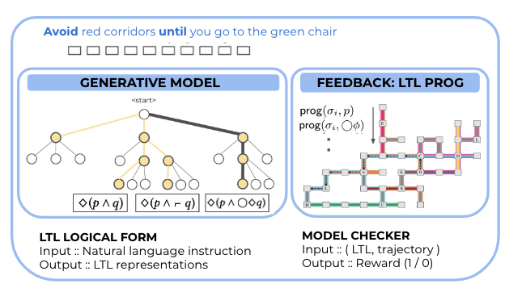
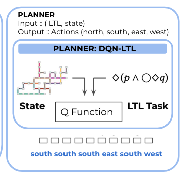
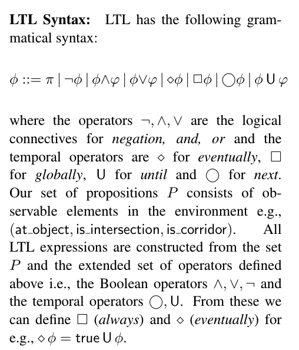
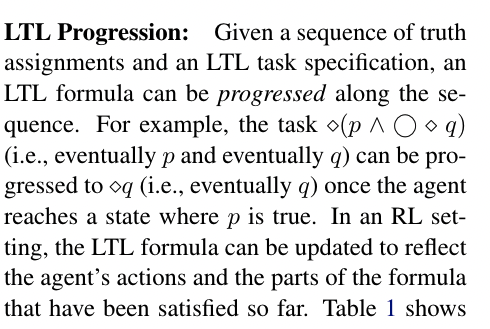

[TOC]
- Title: Learning to Ground Language to Temporal Logical Form
- Author: Roma Patel et. al.
- Publish Year: 2019
- Review Date: Feb 2022
Summary of paper
Motivation
natural language commands often exhibits sequential (temporal) constraints e.g., “go through the kitchen and then into the living room”.
But this constraints cannot be expressed in the reward of Markov Decision Process setting. (see this paper)
Therefore, they proposed to ground language to Linear Temporal logic (LTL) and after that continue to map from LTL expressions to action sequences.
Weak supervision
The author believed that annotating natural language into logical forms is expensive. Instead, they would collect many demonstrations (action sequences) performed by the human players who followed the language instructions. After that,
- they build a generative model that generate logical forms candidates from language inputs
- filter out invalid candidates by having a LTL Program checker

Planning: DQN with LTL
to handle temporal constraints, the author used a non-Markovian reward decision process that incorporates the LTL expression into the environment MDP. the reward function is defined over state history (otherwise the constraints cannot be expressed)

Some key terms
Linear Temporal Logic


Major comments
We can see that LTL can only describe the temporal (causal) constraints, how can we express other constraints from the natural instructions (spatial constraints (maybe something related to the observation analysis), action constraints etc)
If we consider the instruction information as constraints, then we should segment it into different types of constraints… (check the book)
Potential future work
maybe we can combine this work (especially the LTL checker) with the annotation work Guided K-best Selection for Semantic Parsing Annotation